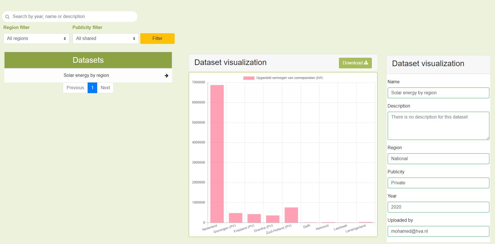

Progressive learning

Progressive learning is a general purpose knowledge management system. The main features of the app are:
- Enable users to create learning-goals and categorize them.
- Users can store, manage and refer to their resource link URL's in a central place instead of constantly looking them up.
 |
Site
|
Site
Pedestrian counter
During one of my university projects I've worked on a pedestrian counter program using Machine Learning and Python.
CSV to graph parser

In a sustainable energy project I worked on parser that visualizes CSV files into a graph.
The front-end of the application was built with Angular and the back-end with Spring Boot.